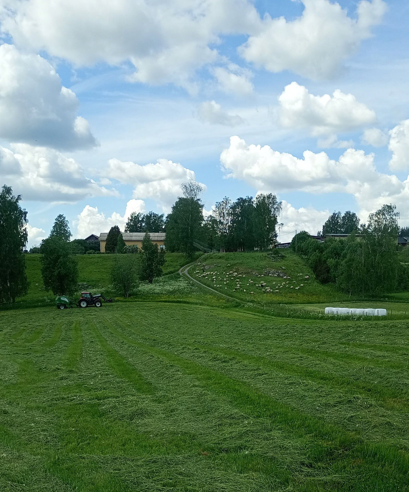
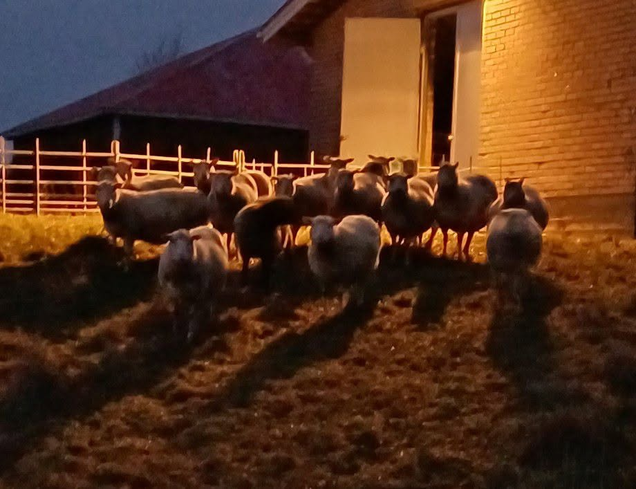
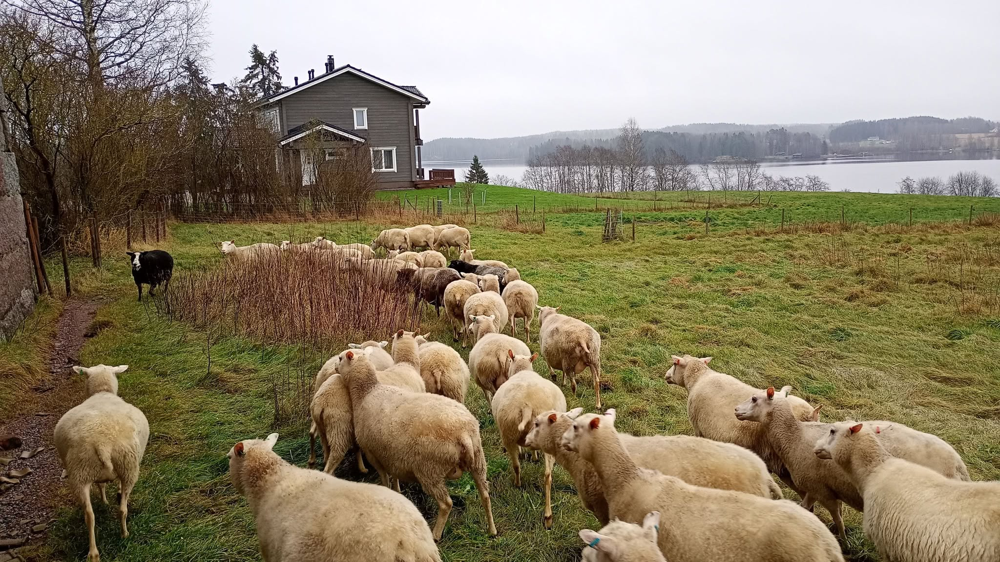
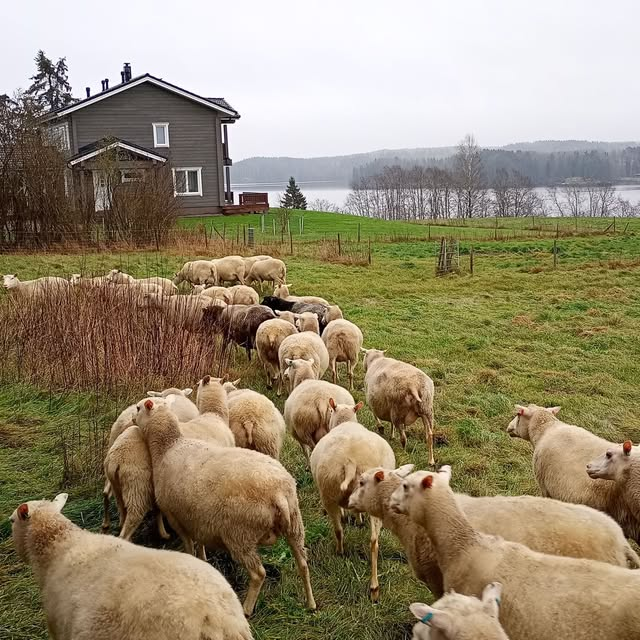
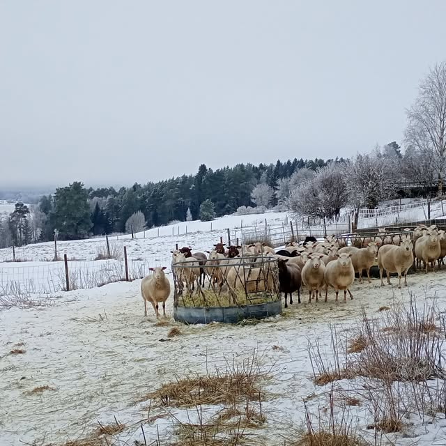
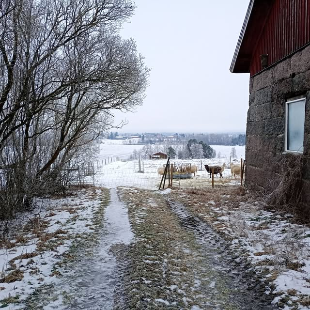
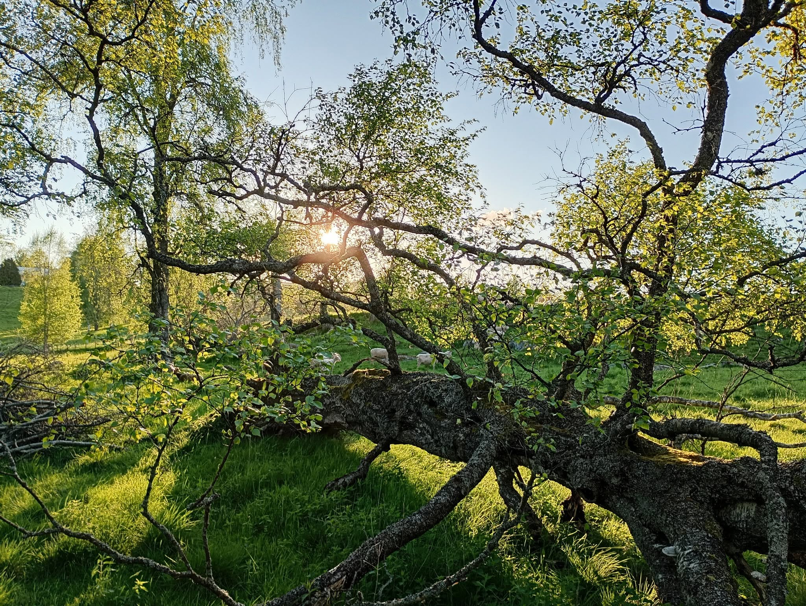
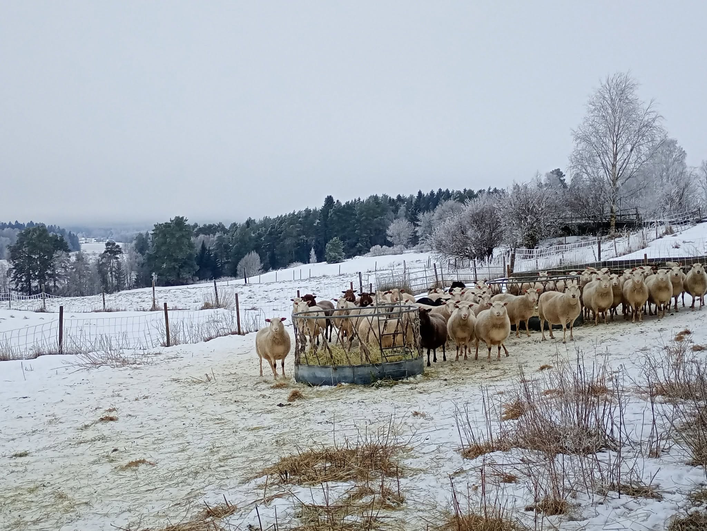
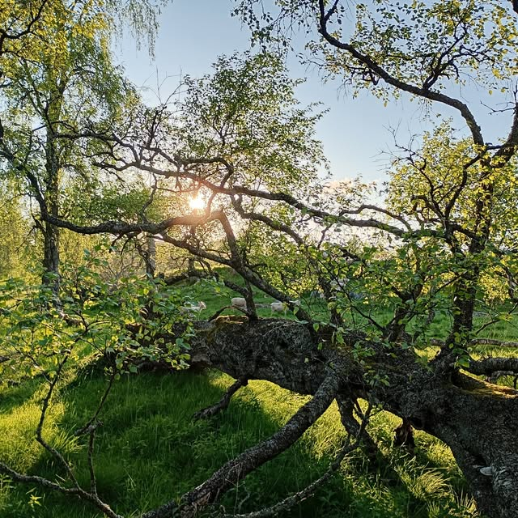
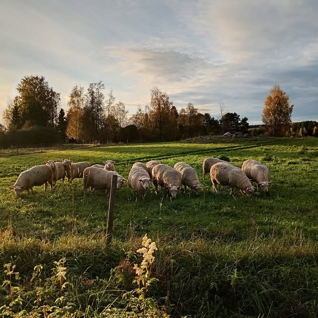

Kilvakkala · Ikaalinen · Pirkanmaa
Suomenlammasta luomuna Kilvakkalan maisemissa
Viitaniemen lammastilalla kasvatetaan suomenlampaita luomuna. Myymme karitsanlihaa ja palvilihaa suoraan tilalta, sekä taljoja. Lampaamme hoitavat myös maisemaa laiduntamalla.

Tarinamme
Lammastila Kilvakkalan kylässä
Viitaniemen lammastila toimii maanviljelysosuuskuntana Kilvakkalan kylässä Ikaalisissa, Pirkanmaalla. Tilalla kasvatetaan suomenlampaita luomuna, ja arki tilalla kulkee vuodenaikojen mukaan laitumilta rehuntekoon. Tilan omalla Facebook-sivulla seurataan yli 500 seuraajan voimin tilan arkea aina kesän rehuntekopäivistä lampaiden laidunkauteen.
- Tila toimii maanviljelysosuuskuntana Kilvakkalassa
- Suomenlampaat kasvatetaan luomusertifioinnin alla
- Yli 500 seuraajaa Facebookissa seuraa tilan arkea
Rotumme
Suomenlammas — Suomen oma maatiaisrotu
Kasvatamme tilallamme suomenlampaita luomuna. Suomenlammas on Suomen oma alkuperäisrotu, joka tunnetaan kestävyydestään ja monipuolisuudestaan niin lihan, villan kuin taljojenkin tuotannossa. Rodun ylläpito tukee samalla kotimaisen alkuperäisrodun säilymistä.
- Kestävä ja vaatimaton alkuperäisrotu
- Soveltuu hyvin luomutuotantoon ja laidunnukseen

Maisemanhoito
Lampaat maisemanhoitajina
Suoramyynnin ja luomutuotannon lisäksi tilamme tarjoaa maisemalaidunnusta. Lampaamme laiduntavat niittyjä ja ranta-alueita, mikä pitää perinnemaisemat avoimina ja monimuotoisina ilman koneellista raivausta.
Valikoimastamme
Karitsanlihaa, palvilihaa ja taljoja

Karitsanliha
Suomenlampaan karitsanlihaa suoramyyntinä suoraan tilalta.

Palviliha
Palvilihaa suoramyyntinä, valmistettu tilan omasta karitsanlihasta.

Taljat
Suomenlampaan taljoja, myydään suoraan tilalta.
Kuvia tilalta
Katso millaista arki on Viitaniemellä




Ajankohtaista
Kuulumisia tilalta
Kesän rehuntekoa uudella traktorilla
Kesän 2026 rehunteko käynnistyi tilalla uuden traktorin voimin — seuraa tilan Facebook-sivua ajankohtaisista kuulumisista.
Lisää kuulumisia pian
Tähän osioon voidaan lisätä tilan uutisia ja kuulumisia sitä mukaa kun sivusto otetaan käyttöön.
Seuraa meitä Facebookissa
Tuoreimmat kuulumiset ja videot löydät tilan Facebook-sivulta.
Kiinnostuitko tuotteistamme?
Ota yhteyttä ja kysy lisää karitsanlihasta, palvilihasta tai maisemalaidunnuksesta.
Yhteystiedot
Ota yhteyttä
-
Viljalantie 99, Kilvakkala, 39530 IkaalinenPirkanmaa
-
050 341 1047Soita tai laita viestiä
-
miila.viitaniemi@hotmail.comVastaamme mielellämme